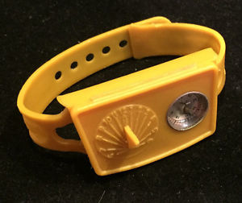

DAVID G. SIMPSON
Personal Web Site
| Home |
| Blog |
| Personal |
| Professional |
| Software |
| Photos |
| Reference |
| Nanopedia |
| Wiki |
| Contact Me |
| NASA Site |
| PGCC Site |
| Purdue Site |
| SCHS Site |
| Esperanto |
| Moon Rocks |
| S-M Comics |
| Mouse Site |
| Art Gallery |
MOON MISSION AGENT WRIST KIT
In the early 1970s, Buster Brown shoes offered a free prize with the purchase of a pair of their shoes: a cleverly designed and educational “Moon Mission Agent Wrist Kit.” The kit was made of yellow plastic, and strapped to the wrist like a watch. On top was a sundial and magnetic compass; under that was a “secret compartment,” inside which was printed a secret code chart and a Morse code chart. Also inside the secret compartment was a tiny book, the Mini Moon Book.
Mini Moon Book
The Mini Moon Book included with the kit was square, 3/4" on a side, and contained 34 pages of information on how to use the kit, secret codes, astronomy, and the Moon. You can find a scanned PDF copy of the book here.The book includes some facts about the Moon on pp. 26-29. On page 29, it states that there are 30,000 craters on the near side of the Moon. That figure is approximately correct if we consider only craters with a diameter of 1 mile or more.
The Mini Moon Book also mentions that one of the lunar craters is 146 miles wide. This probably refers to the crater Clavius on the Moon's near side, in the southern hemisphere.
There is no copyright date in the book, but based on the information inside, it was likely written in the late 1960s.
Secret Decoder
The kit included two codes: a “secret” and an “international” code. The secret code is a simple substitution cipher, as shown in the chart printed on the lid of the secret compartment and reproduced below.
| Plain Text | Encoded Text |
|---|---|
| A | Y |
| B | J |
| C | M |
| D | H |
| E | D |
| F | Z |
| G | I |
| H | V |
| I | F |
| J | T |
| K | N |
| L | C |
| M | S |
| N | K |
| O | R |
| P | O |
| Q | A |
| R | Q |
| S | E |
| T | X |
| U | B |
| V | W |
| W | U |
| X | P |
| Y | L |
| Z | G |
To decode a message, one reads this chart right to left.
International Code
On the bottom of the secret compartment is printed a chart of what is called the “international code.” This is actually the International Morse Code. The chart shown in the kit is reproduced below.
| Letter | Code |
|---|---|
| A | • – |
| B | – • • • |
| C | – • – • |
| D | – • • |
| E | • |
| F | • • – • |
| G | – – • |
| H | • • • • |
| I | • • |
| J | • – – – |
| K | – • – |
| L | • – • • |
| M | – – |
| N | – • |
| O | – – – |
| P | • – – • |
| Q | – – • – |
| R | • – • |
| S | • • • |
| T | – |
| U | • • – |
| V | • • • – |
| W | • – – |
| X | – • • – |
| Y | – • – – |
| Z | – – • • |
Solutions to Puzzles
The Mini Moon Book included two coded messages to be decoded. The solutions are shown here.
Secret Code Message (p. 15)
The Secret Compartment in
your Moon Mission Agent Wrist
Kit is large enough to hold
nickels, pennies and dimes,
as well as the Mini-Moon Book.
You can also use it for
keeping secret messages
until you are ready to send
them.
International Code Message (pp. 24-25)
LUNAR SQUADRON 19 TO MOON MISSION HEADQUARTERS
HAVE EXPLORED EVERY INCH OF THE MOON AND WISH
TO REPORT THAT IT IS NOT MADE OF GREEN CHEESE
Contact Information
I may be contacted at: